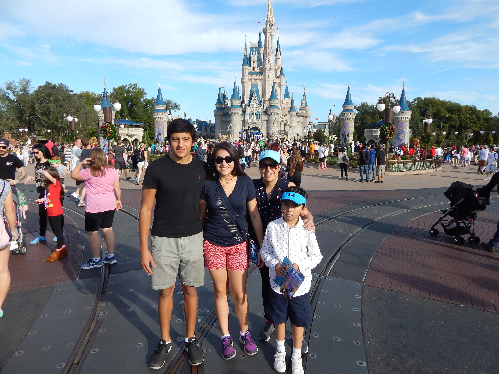

Places I have visited

Disneyland
I visited Disneyland in dec 2016
¡Disneyland is a magical place! If you are a Disney fan such as me I would recommend you to take a trip to Orlando and get to know it.
Italy
I visited Italy during the summer 2019
I love the culture, the people and the language. If you are a fan of art, you must go on a trip to Italy.
Review On The Movies
My favorite movie
In a dystopian near-future Japan, an influenza virus spreads throughout the canine population, with a risk of crossing to humans. The 6-term authoritarian mayor of Megasaki City, Kenji Kobayashi, signs a decree banishing all dogs to Trash Island, despite a scientist named Professor Watanabe insisting he is close to finding a cure for the dog flu. The first dog to be exiled is Spots, a white and black-speckled pink-nosed dog who served as the bodyguard of Atari Kobayashi, the orphaned nephew and ward of the mayor. Six months later, Atari steals a plane and flies to Trash Island to search for Spots. After crash-landing, Atari is rescued by a pack of dogs led by a seemingly black dog named Chief, who is a former stray. The pack decides to help Atari locate Spots, although Chief refuses to join because of his inability to fraternize with humans. Together, they fend off a rescue team accompanied by a robot dog that Kobayashi sent to retrieve Atari.

My favorite movie
Spirited Away is a 2001 Japanese animated fantasy film written and directed by Hayao Miyazaki, animated by Studio Ghibli for Tokuma Shoten, Nippon Television Network, Dentsu, Buena Vista Home Entertainment, Tohokushinsha Film, and Mitsubishi and distributed by Toho. The film features the voices of Rumi Hiiragi, Miyu Irino, Mari Natsuki, Takeshi Naito, Yasuko Sawaguchi, Tsunehiko Kamijō, Takehiko Ono, and Bunta Sugawara. Spirited Away tells the story of Chihiro Ogino (Hiiragi), a ten-year-old girl who, while moving to a new neighborhood, enters the world of Kami (spirits of Japanese Shinto folklore). After her parents are turned into pigs by the witch Yubaba, Chihiro takes a job working in Yubaba's bathhouse to find a way to free herself and her parents and return to the human world.